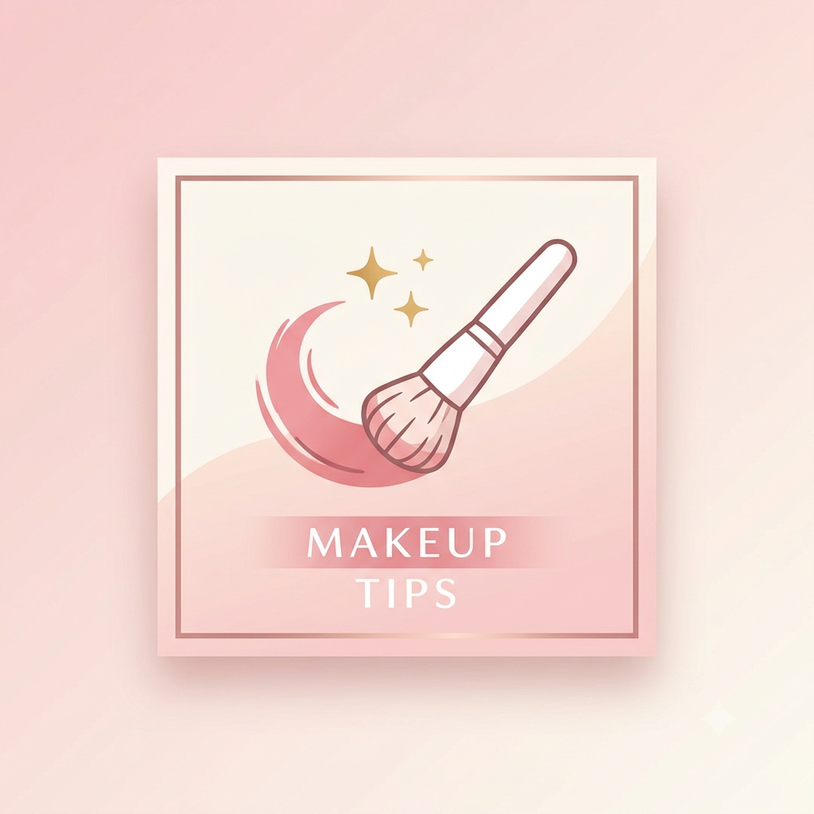

Vamos falar sobre maquiagem e como se maquiar.
Por: Lorena
Boas-vindas ao meu novo blog! Aqui vou compartilhar dicas sobre maquiagem, tendências, produtos e tutoriais para você arrasar na make.
Para evitar que a maquiagem craquele, o primeiro passo é hidratar bem a pele antes de começar. Depois, aplique um primer para ajudar na fixação da maquiagem.
Use uma quantidade moderada de base e espalhe bem com uma esponja ou pincel. Evite exagerar no pó, principalmente na região dos olhos, pois isso pode deixar a pele com aspecto ressecado.
Finalize a maquiagem com um spray fixador. Assim, a make dura mais tempo e fica com um acabamento bonito e natural.

primeiro passo lavar bem o rosto com um sabonete neutro, segundo passo passa um tonico no rosto e esperar secar, terceiro passo passar um bom hidratante, quarto passo passar a blindagem e esperar secar, quinto passo primer e a pele ja ta pronta para começar a make.
depois de hidratar bem o rosto, passe um corretivo do tom da sua pele, logo em seguida espalhe com uma esponja umida se arrastar dando batitinhas de leve, apos isso passe um blush liquido, espalhe com um pincel, assim que ja tiver espalhado passe um corretivo mais claro para dae uma iluminada na area dos olhos, depois passe um pó banana em todo o rosto para evitar oleosidade, deixe o pó agindo, em quanto isso passe um rimel com muito cuidado nos olhos, em seguida tire o pó com um pincel, e passe um blush em pó, passe um gloss e uma bruma para maquiagem durar e ta pronta a maquiagem